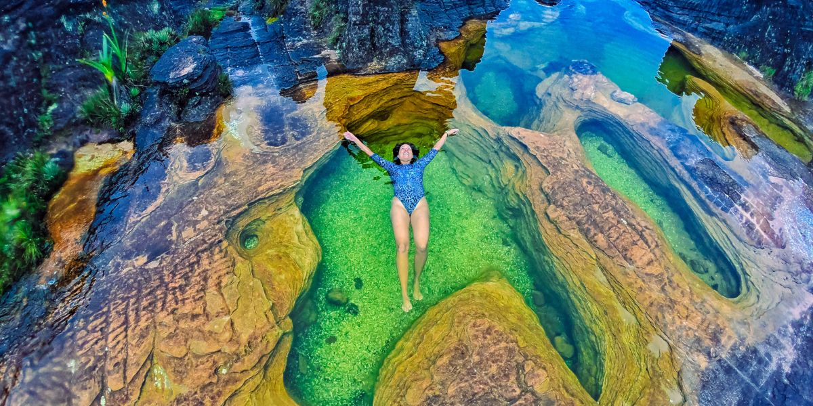
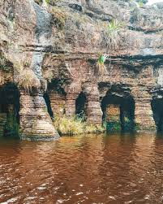
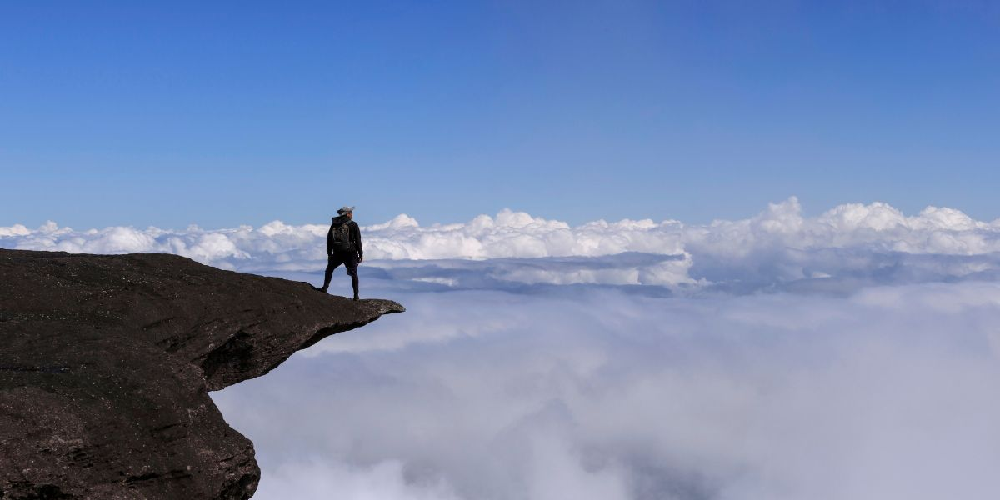

Rio Arabopó
O Rio Arabopó é um dos rios que correm no topo do Monte Roraima. O rio é alimentado pelas chuvas que caem no topo do monte e correm por entre as rochas, formando pequenas cascatas e piscinas naturais. Tomar um banho nas águas geladas do Rio Arabopó é revigorante e uma maneira perfeita de recarregar as energias durante a expedição

El Fosso ("O Poço")
El Fosso é uma enorme fenda no topo do Monte Roraima, com cerca de 40 metros de profundidade. A fenda de El Fosso é uma das muitas formações geológicas únicas encontradas no monte. Ela se destaca pela sua profundidade e pelas paredes verticais que parecem descer infinitamente.

La Ventana ("A Janela")
Um mirante natural com vista espetacular para os abismos e para o lado venezuelano da montanha. Ideal para fotos — especialmente ao amanhecer ou no fim da tarde.